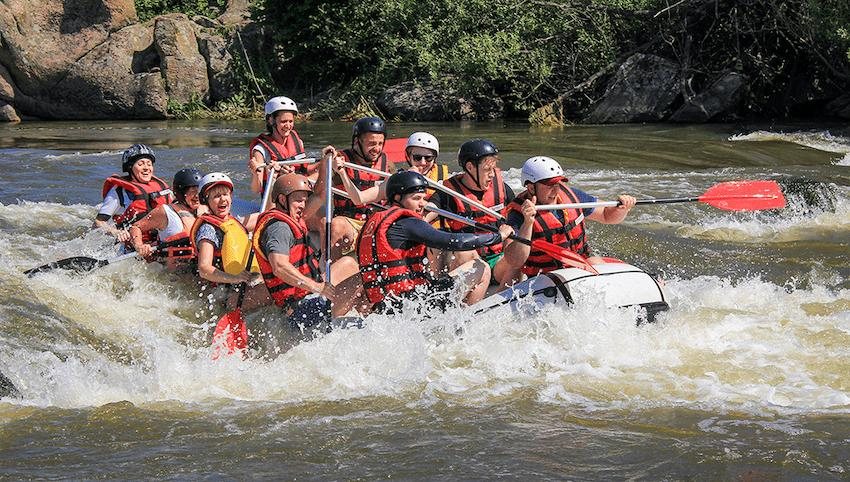

White Nile Rafting Ltd
History
White Nile Rafting Ltd, established in 2009 in Buwenda, Jinja, is the first African/Ugandan-founded rafting company on the White Nile. Founded by Prossy Mirembe Deborah De Wildt, a champion freestyle kayaker, it began as a kayak school before growing into a full adventure center, offering Grade 5 rafting with a strong emphasis on safety and local expertise